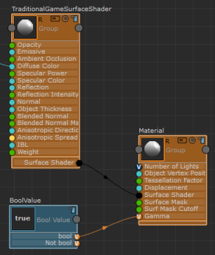

将贴图转化为线性空间
如果目标引擎为线性，则应当对 RGB 纹理进行 Gamma 校正。若要将纹理贴图转化为线性空间，请选择“纹理贴图”(Texture Map)节点，并启用“属性编辑器”(Attribute Editor)中的“ConvertToLinearSpace”。
从 ShaderFX 菜单栏中选择“设置 > 切换高级模式”(Settings > Toggle Advanced Mode)以启用高级模式。单击“纹理贴图”(Texture Map)节点上的“组”(Group)  图标以可视化组网络。在组网络视图中，找到“ToLinearSpace”组。单击其“组” 图标以展开网络，然后根据需求进行编辑。
图标以可视化组网络。在组网络视图中，找到“ToLinearSpace”组。单击其“组” 图标以展开网络，然后根据需求进行编辑。
注： 如果通过“ConvertToLinearSpace”对颜色纹理去除 Gamma，则还应当针对“材质”(Material)节点启用 Gamma。
着色器端点的 Gamma 校正
如果通过“ConvertToLinearSpace”对颜色纹理去除 Gamma，则还应当针对“材质”(Material)节点启用 Gamma。您可以在着色器端点重新应用 Gamma 校正，如下所示：
- 从 ShaderFX 菜单栏中选择“设置 > 切换高级模式”(Settings > Toggle Advanced Mode)以启用高级模式。
- 选择“图形节点 > 值 > 布尔值”(Graph Nodes > Values > Bool Value)以创建“布尔值”(Bool Value)节点。
- 将“布尔值”(Bool Value)的“布尔”(bool)属性连接到“材质”(Material)节点的“Gamma”属性。

当“布尔值”(Bool Value)的“值”(Value)设置为 true 时，将应用 Gamma 校正。
有关“图形节点”(Graph Nodes)的详细信息，请参见使用“高级模式图形节点”(Advanced Mode Graph Nodes)添加开关。
注： 您也可以通过转到“渲染设置”(Render Settings)窗口，然后选择“Gamma 校正”(Gamma Correction)下的“启用”(Enable)来启用 Viewport 2.0 中的 Gamma 校正。